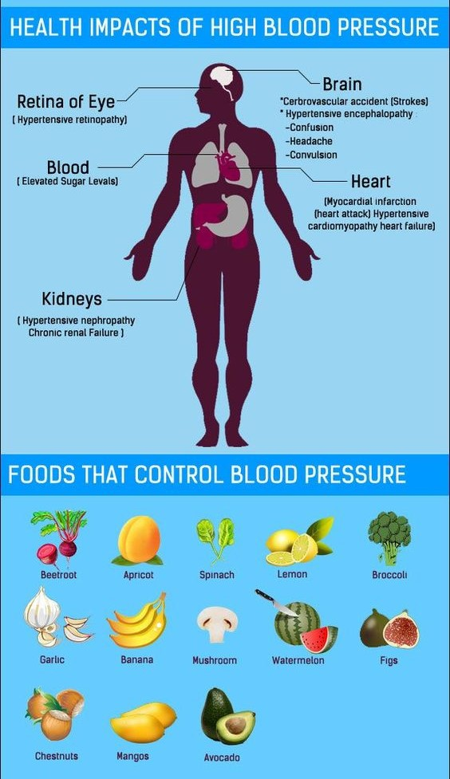

High Blood Pressure Treatment

Hypertension, or high blood pressure, is dangerous because it can lead to strokes, heart attacks, heart failure, or kidney disease. The goal of hypertension treatment is to lower high blood pressure and protect important organs, like the brain, heart, and kidneys from damage. Treatment for hypertension has been associated with reductions in stroke (reduced an average of 35%-40%), heart attack (20%-25%), and heart failure (more than 50%), according to research.
High blood pressure is now classified as a systolic blood pressure greater than 130 and diastolic over 80.
To prevent high blood pressure, everyone should be encouraged to make lifestyle modifications, such as eating a healthier diet, quitting smoking, and getting more exercise. Treatment with medication is recommended to lower blood pressure to less than 130/80 in people older than age 65 and those with risk factors such as diabetes and high cholesterol.
Lifestyle Changes to Treat High Blood Pressure
A critical step in preventing and treating high blood pressure is a healthy lifestyle. You can lower your blood pressure with the following lifestyle changes:
Losing weight if you are overweight or obese
Quitting smoking. Tobacco damages the walls of your blood vessels and hardens your arteries. Both need to be in good shape while you control your blood pressure.
Following the DASH eating plan, which stands for Dietary Approaches to Stop Hypertension. It focuses on vegetables, fruits, whole grains fish, poultry, nuts, and beans. High-potassium foods, like avocados, bananas, dried fruits, tomatoes, and black beans, get a big thumbs-up. This plan keeps sugary drinks, sweets, and high-fat meats and dairy products at a minimum.
Reducing the amount of sodium in your diet to less than 1,500 milligrams a day if you have high blood pressure; healthy adults should try to limit their sodium intake to no more than 2,300 milligrams a day (about 1 teaspoon of salt). Many processed foods have a lot of salt in them.
For instance, soups, condiments, and tomato sauce can have as much as 75% of the total amount of salt you need each day. Read food labels carefully (salt is listed as sodium), and don't sprinkle more on when you cook or before you eat. Instead, use spices and herbs to flavor your food.
Getting regular aerobic exercise (such as brisk walking at least 30 minutes a day, several days a week). Check out a yoga class. Seek out activities that get your heart pounding, like biking or swimming. Over the course of a week, aim to exercise consistently for at least 2 1/2 hours total.
Keeping a healthy weight for your age and height is key. If you're overweight or have obesity, you can lower your blood pressure by losing just 5 pounds.
Limiting alcohol to two drinks a day for men, one drink a day for women. One drink is an ounce of alcohol, 5 ounces of wine, or 12 ounces of beer.
Reducing stress. Think about stressful areas of your life and take steps to change them. Consider talking to a counselor, learning meditation or anger-control techniques, or getting regular massages.
Drugs to Treat High Blood Pressure
There are several types of drugs used to treat high blood pressure, including:
Angiotensin-converting enzyme (ACE) inhibitors
Angiotensin II receptor blockers (ARBs)
Diuretics
Beta-blockers
Calcium channel blockers
Alpha-blockers
Alpha-agonists
Renin inhibitors
Combination medications
Diuretics are often recommended as the first line of therapy for most people who have high blood pressure.
However, your doctor may start a medicine other than a diuretic as the first line of therapy if you have certain medical problems. For example, ACE inhibitors are often a choice for people with diabetes. If one drug doesn't work or is disagreeable, additional medications or alternative medications may be recommended.
If your blood pressure is more than 20/10 points higher than it should be, your doctor may consider starting you on two drugs or placing you on a combination drug.
High Blood Pressure Treatment Follow-Up
The most important element in the management of high blood pressure is follow-up care.
After starting high blood pressure drug therapy, you should see your doctor at least once a month until the blood pressure goal is reached. Once or twice a year, your doctor may check the level of potassium in your blood (diuretics can lower this, and ACE inhibitors and ARBs may increase this) and other electrolytes and BUN/creatinine levels (to check the health of the kidneys).
After the blood pressure goal is reached, you should continue to see your doctor every 3 to 6 months, depending on whether you have other diseases such as heart failure.
If you have diabetes or have had a heart attack or stroke, you’ll need to keep a closer watch on your blood pressure to prevent recurrent events. Check with your doctor about what blood pressure readings you should be aiming for.
With aging and hardening of the arteries, your systolic blood pressure may creep up. A treatment that once worked well may no longer work. Your drug dosage may need to be changed, or you may be prescribed a new medication.
Periodically, at your follow-up visits, you should be screened for damage to the heart, eyes, brain, kidney, and peripheral arteries that may be related to high blood pressure.
Follow-up visits are a good time to let your doctor know about any side effects you’re having from your medication. They will have suggestions for coping with side effects or may change your treatment.
Follow-up visits are a great opportunity for monitoring other associated risk factors, such as high cholesterol and obesity.